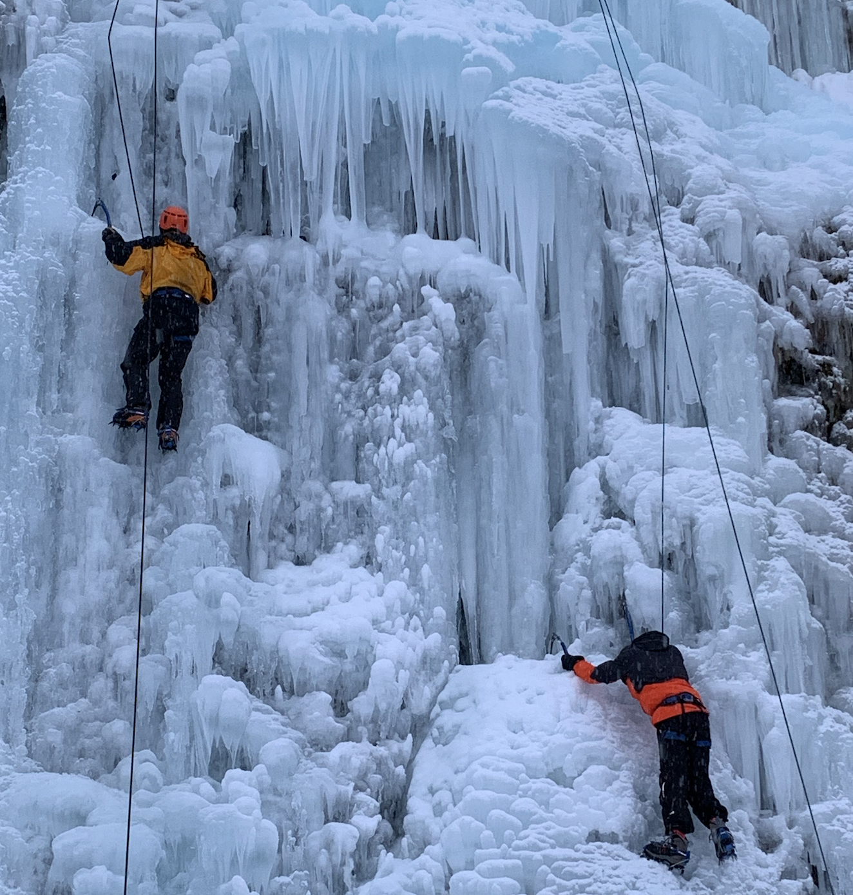

Hello, c'est Victor 🏄🏼♂️
Je suis un étudiant en alternance à l'IESEG au sein de l'entreprise Coca-Cola 🥤. Passionné de sports nautiques et d'aventure, j'aime profiter de mon temps libre en me dépassant et en faisant du sport avec mes proches 🌍💦
Découvrez mon profilSports d'eau💧
Depuis très jeune, je pratique les sports nautiques tels que la voile, le surf, le kite, le ski nautique 🏄🏼♂️. J'ai par exemple traversé l'atlantique avec mon meilleur ami et une partie du pacifique avec ma famille ⛵️.

Aventure 🏕
Passer du temps en plein air est nécéssaire pour moi. J'en profite pour me lancer des défis et essayer de les réaliser. Je prévois de grimper le mont blanc en mai 2021 🗻
Vie pro 💻
J'ai démarré par une première experience d'un an chez PayByPhone en tant que Business developper dans la section B2B. C'était l'occasion pour moi de mettre à profit mes compétences dans un écosytème digital 📲
Ensuite, j'ai travaillé 4 mois chez Fidme en tant que responsable marketing digital et SEO. L'occasion pour moi de me plonger dans l'univers du marketing digital et d'apprendre les bases du référencement organique d'une startup en croissance📈
Cette année, je viens de rejoindre le groupe Coca-Cola en alternance pour 2 ans. Ma mission est d'opérer les campagnes marketing e-commerce et d'analyser les bilans de ces dernières📊. Ce job passionnant me permet d'apréhender le monde de la grande consommation, auquel j'aspire à travailler plus tard 🛒.